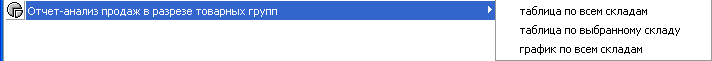
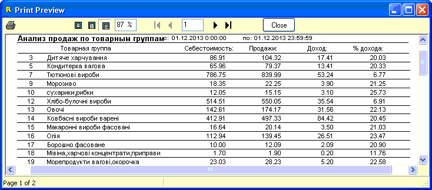

Одним из наиболее востребованных в группе готовых
отчетов по реализации является Отчет-анализ продаж в разрезе товарных групп.
Данный отчет может сниматься в трех видах, каждый запускается из своего
меню.

Ниже показан пример вывода отчета в виде таблицы.
В первом варианте отчет формируется по всем складам, во втором - по указанному
на форме складу. Во всех случаях для выборки используются данные календариков
"С дату/По дату". В конце отчета подсчитываются итоговые результаты по
столбцам.

В третьем варианте отчет снимается в виде
графика, а именно гистограммы, в которой красным цветом отмечена сумма
реализации товара, зеленым - доход, а подписью с процентным значением показана
доля дохода каждой товарной группы от общей суммы дохода по всем группам.
Таким образом, данный график в наглядном виде может служить для анализа
целесообразности работы с интересующими товарными группами. В верхнем левом
углу отчета есть кнопки со стрелками, переключающие страницы графика, если
количество групп не вмещается на 1 страницу. График отсортирован по
%.